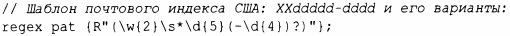
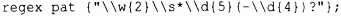

⇐9.3 Представления строк 9.4.1 Поиск⇒
Регулярные выражения являются мощным инструментом для обработки текста. Они обеспечивают способ простого и подробного описания шаблонов в тексте (например, почтовый индекс США, такой как ТХ 77845, или дату в стиле ISO, например 2009-06-07) и эффективного поиска таких шаблонов. В заголовочном файле <regex> стандартная библиотека обеспечивает поддержку регулярных выражений в виде класса std: : regex и функций поддержки. Чтобы попробовать библиотеку regex "на зуб", давайте определим и выведем шаблон регулярного выражения :
Программисты практически на любом языке, которые использовали регулярные выражения, сочтут строку \w{2} \s*\d{5} (-\d{4})? знакомой. Она задает шаблон, начинающийся с двух букв \ w {2}, за которыми следует необязательный пробел \ s *, за которым следуют пять цифр \ d {5} с необязательным последующим тире и четырьмя цифрами -\d{ 4}. Если вы не знакомы с регулярными выражениями, то сейчас самое время познакомиться с ними, например, в книгах [55], [33] и [22].
Чтобы записать шаблон, я использую необработанный строковый литерал, начинающийся с R "(и заканчивающийся)". Он позволяет использовать обратную косую черту и кавычки в строке непосредственно, без специальных последовательностей символов. Необработанные строки особенно хорошо подходят для регулярных выражений, потому что они, как правило, содержат много обратных косых черт. Если бы я использовал обычную строку, то определение шаблона было бы следующим:
В заголовочном файле <regex> стандартная библиотека предоставляет поддержку регулярных выражений: